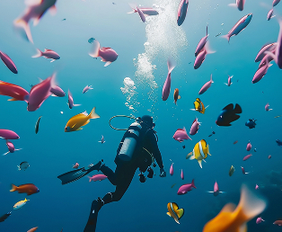
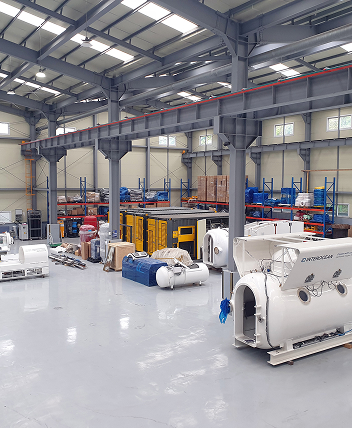
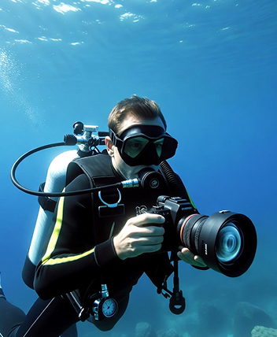
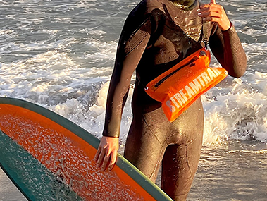

제조기술
MANUFACTURING TECHNOLOGY
현장에서 답을 찾는 연구개발
현장 사용자의 요구와 사용 환경을 분석해 제품을 연구합니다.
시제품 제작과 실제 환경 시험을 거쳐 성능을 검증하고 개선합니다.
PROCESS
연구개발 과정

01
요구 분석과 기획
현장 사용자의 의견을 모으고 사용 환경을 조사해
해결해야 할 문제와 개발 목표를 정합니다.

02
설계와 시제품
구조와 소재를 설계하고 시제품을 만들어
착용감과 기능을 내부에서 먼저 평가합니다.

03
시험과 검증
실제 사용 환경에서 시험하고 사용자 평가를 받아
성능과 안전성을 검증합니다.

04
개선과 제품화
시험 결과를 설계에 반영하고 양산을 준비하며,
출시 이후에도 의견을 모아 계속 개선합니다.
사용자의 현장이
곧 인터오션의 연구실입니다.